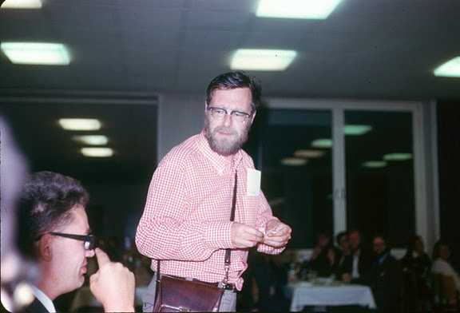
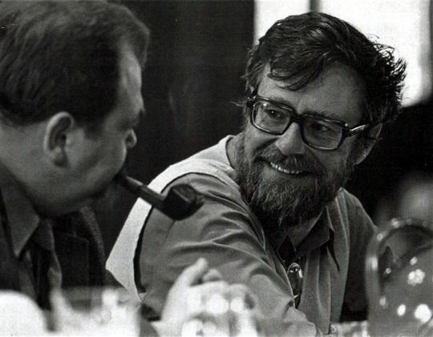
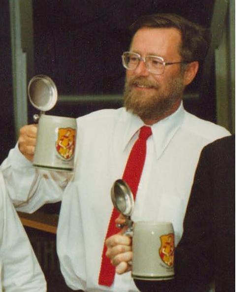
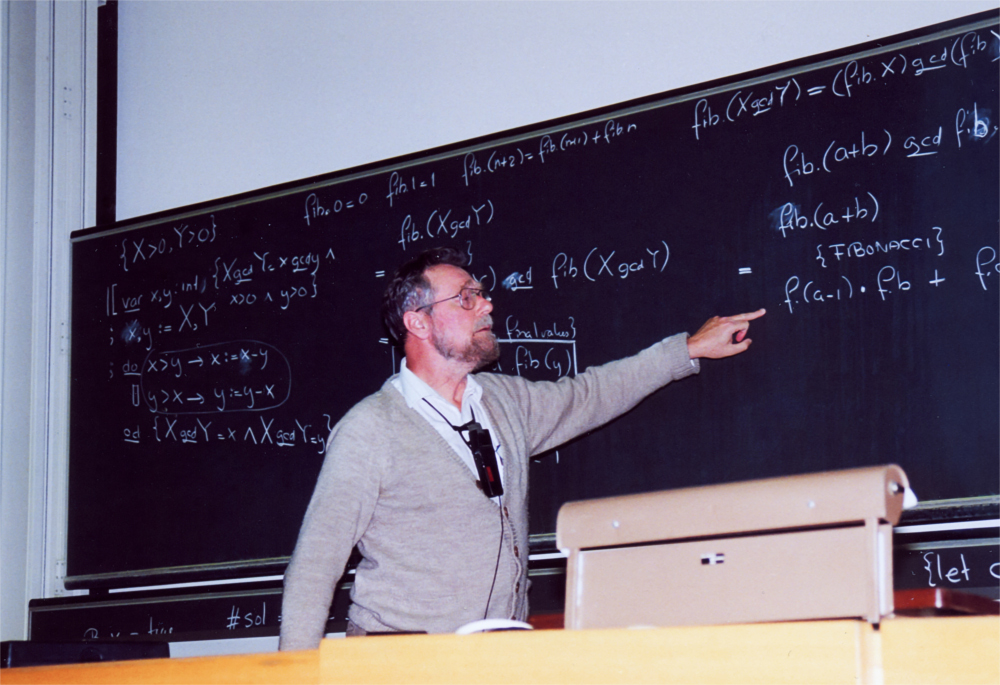

Εικονες Ο Dijkstra το 2002 Ο Dijkstra στην δεκαέτια του 50  Ο Dijkstra κατα την διάρκεια του Marktoberdorf Summer School  ο Dijkstra με τον Wlad M. Turski  Ο Dijkstra το 1982  Ο Dijkstra κατα την διάρκεια ενός συνεδρίου στο ETH Zurich το 1994